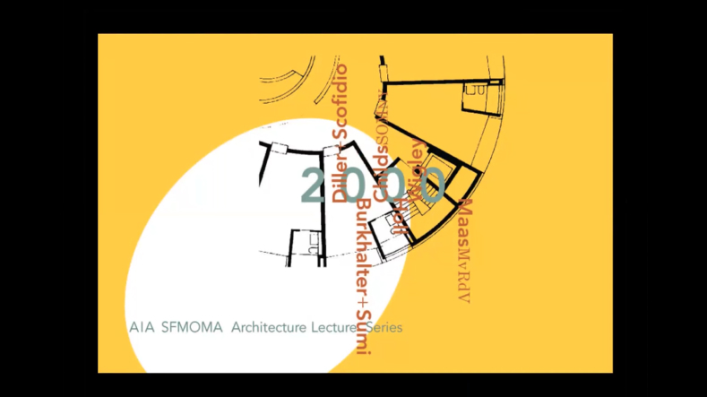

Lucille Tenazas is both an educator and graphic designer. Her studio, Tenazas Design was based in San Francisco for 20 years but relocated to New York in 2006, returning to the city where she originally began her practice in 1982. She is the Henry Wolf Professor in the School of Art, Media and Technology at Parsons The New School for Design where she is developing a graduate concentration in Design, Craft and Technology. Previously, she was the Founding Chair of the MFA program in Design at California College of the Arts in San Francisco. Lucille's work has been featured in many publications and exhibitions both nationally and internationally, including a 2003 retrospective of her work from the permanent collection of the San Francisco Museum of Modern Art.
“The role of the designers is to make sense out of nonsense.”
“Appreciate the things that are under appreciated.”
“Typography also mimics the frame of the body, the skeleton”
“The image and text are married. They are dependant on each other”